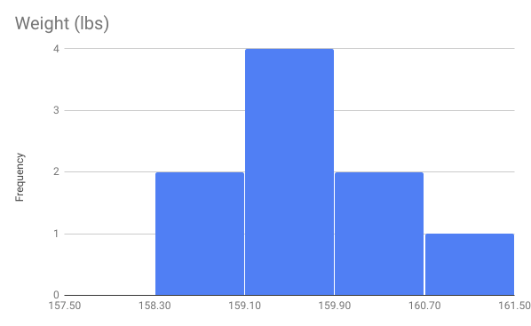

Omron Scales
Table of Contents
How Variable are Omron Scales?
Draft: v0.66.0 | Posted: 7/8/2017 | Updated: 7/15/2018 | confidence of success: 75% | estimated time to completion: December 2017 | importance: Low
Abstract
I measure myself with an Omron body composition scale roughly every 30-60 minutes or so across two days, seeing how my weight fluctuates throughout the day, after meals and exercise, etc. I cross-referenced this with the other variables this scale tracks (body-fat percentage, Visceral Fat, and Skeltal Muscle) to see if these variables were valuable or meaningful, or if paying attention to them would be misleading. I found that a commonly-held criticism of the scale - that water weight caused large fluctuations in bodyfat measurement - was difficult to reproduce, and that the scale seemed to be relatively consistent despite fluctuations of roughly 2% in either direction. That is to say, water intake had very little affect on actual water retention as measured by the scale. Remaining to be done is repeated trials at substantially different body compositions.
Intro
I'm working on a data-driven approach to my own personal health, and something I thought could potentially be valuable was a simple body-composition scale. I figured it would be somewhat more information than fat calipers, as well as being more consistent and easy to use. I was worried about the apparent fluctuation that some of the more negative reviews complained about, with the claim being that increased water intake drastically affects the bodyfat percentage measurement. After considering that I track my food and water intake very closely, I figured I might be able to remedy this with some spreadsheet magic and a lot of free time.
The goal here was to determine how variable the body composition measurements were, how they change with water intake over time, and how seriously (if at all) I should consider those data points. I did this by measuring myself roughly every thirty minutes to an hour, and recording what/when I ate/drank as well as what I was doing. I did this for two days to collect data points, then threw all the data in excel to visualize it. I was hoping for a function that I could input the times I drank water, along with how much, in order to adjust what measurement I was given. I also harbored suspicion that such a correlation might not exist at all (i.e. a possible mass case of "the scale is definitely lying to me"), so this was also partially meant to test this claim.
Pilot Results (160lbs, July 2017)
After taking 18 measurements on the first day, I found almost no correlations between any of the data points - Weight and Bodyfat Percentage seemed completely uncorrelated (p=0.35), although skeletal muscle and bodyfat percentage were extremely correlated (p=6.75e-14) which suggests to me that the scale performs some kind of calculation on the same measurement to return both values. To test this, I took a few measurements while wearing a backpack with some weight in it (~10lbs and ~20lbs), which averaged around 23% and 27% bodyfat, respectively. (sidenote: putting those backpacks on and seeing numbers that I actually weighed only a few months ago was extremely disorienting!). Given the numbers from my normal day (means of .19 and 160 = 30.4lbs fat) and these new numbers (.23*170=39.1; .27*180=48.6) it was basically suggesting that all this added weight was fat. This gave me some confidence that the scale was indeed measuring something, and was probably calculating bodyfat percentage by process of elimination (i.e. everything not X is fat, therefore you are Y% bodyfat).
Curiously, throughout the day I was unable to demonstrate a correlation between my normal water intake and bodyfat percentage. I tried using "amount of water consumed since last measurement", "difference in water since last measurement", and "total water change since beginning of day" (for which I even used a sweating calculator to account for water lost during a run). The lowest p-value I got was 0.24, which is certainly not very significant. I did, however, note an outlier immediately after running (19% -> 15%) which shot back up after taking a shower (10 minutes later, 15% -> 17%). I tried getting my hands wet and using it to see if it would mess with the measurement (it didn't), and I took 6 measurements directly in a row to see if it would fluctuate that low, which it didn't (min: 18.4, max: 20.1; notably this range only excludes 5 data points from measuring 18 times throughout the entire day - the scale might just have an accuracy of +/- 2%).
So, I thought of a few scenarios in which running might have caused an outlier like this:
- Water does change the scale result, but only at more extreme quantities
- Running depleted something in my body like glycogen, which was
replenished because I had cereal for breakfast (note: almost
certainly not fat, since an optimistic 300ish calories from a 30
minute run should burn a max of 0.08 lbs of fat given the common
handwavey estimate of 3500 calories per pound of fat)
- In this case, it would be repeatable the next time I went for a run. When I tested this, I did the same sequence and saw my bodyfat measurement drop to 16%, so I suspect that this might be a good part of it.
So, the next day I deliberately didn't eat any food or drink any water for most of the day, then ate a great deal and drank a lot of water in a really short window. The hope with this was to get somewhat dehydrated, then very hydrated to see if the change in weight would affect anything. I ended up eating 467g of food (my entire food intake for a day) and drinking 48 fl oz of water (which weighs 1422g) for a total change of about 4 lbs (it was very uncomfortable, especially given how small my meals had been for the months before this). My scale weight changed exactly 4 lbs before and after (158.8 -> 162.8), and my bodyfat percentage didn't really change (and actually went down compared to immediately before eating, although both were well within the normal fluctuation for the day at 21.9 -> 21.6). Notably, the visceral fat measurement was bumped up to 6 despite being 5 the previous 25 measurements. My weight fluctuated pretty wildly after eating (-> 164.4 -> 162.2) but my body fat percentage remained between the same range the entire time.
The mean values for each day's body fat measurement were 19.2 and 20.4, respectively. Below is a histogram of results aggregated from both days, which is close enough to normal given the relatively small sample size.
And below are the percent deviations of each point from the overall mean, and histograms of each measure's percent deviations (omitted is visceral fat, which was overwhelmingly consistent to the point of not needing a histogram). From this you can gather that the measurements are mostly consistent, and usually fall upon a relatively normal distribution. If you assume that the mean value is somewhat accurate, you can assume that this scale will return an accurate value most of the time, and if you take enough points of data (i.e. measuring each day for a long period of time) then the noise generated from outliers will likely be filtered out.

Overall, the bodyfat composition measurement and my water intake/expenditure seem to have very little, if any, correlation between them. The bodyfat percentage measurement as well as the other measurements on this scale seem to be relatively consistent, albeit fluctuating across a 3-4%ish range.
Secondary Results (148lbs, August 28, 2017)
After reaching my weight goal I maintained weight for a bit, then retested the scale. Results are as follows.


Visceral fat was 4 for every measurement, a change of 1. It seems the scale is suggesting the following changes since last measurement:
- Weight 160 lbs -> 148 lbs
- Bodyfat 19.5% -> 17.7%
- Skeletal Muscle 40.5% -> 40.5%
Meaning I preserved a good amount of muscle and lost mostly fat. Hooray!
Tertiary Results (160 lbs, July 2018)
Quite a long while later, I made my way up to 160 lbs again. It took a while longer than I originally intended, as I moved, got a job, etc. which took a lot of the time I had to spend on diligent tracking. That said, since the last update on this page I have developed an interest in bouldering, and have slowly made my way back up to this weight I used to be at.
Here are some hastily thrown together histograms - I only took 9 measurements so I didn't bother making them look super polished, especially since all I really needed was to compare last year to this year.

Suggesting the final, ultimate results
- Weight 160 lbs -> 148 lbs -> 160lbs
- Bodyfat 19.5% -> 17.7% -> 17.6%
- Skeletal Muscle 40.5% -> 40.5% -> 41.6%
Thoughts
Thoughts before project completion
So far, This scale seems to provide a tentatively accurate measure of a number of different variables, and I'm excited to track how they change as the composition of my body adjusts. I think the variation in the measurements is negligible enough to be useful enough for looking at trends. So far, I've only measured "local" weight changes, so I'm only assigning a ~75% confidence that these data points are valuable at different body compositions.
Interesting to note, on a separate tangent, that my weight fluctuated a range of 2.6 lbs during a single day (not including my 4lb binge), which will be a useful figure for analyzing trends in my weight over longer time periods.
Thoughts post-project completion
I am fairly happy with how this concluded, despite the fact that it took much, much longer than I originally intended and I took a rather roundabout path to get there. I would recommend this scale to anybody seeking more data on their body composition, and I'm very happy with the purchase. Furthermore - this is very motivating! I am the same weight as I was a year ago but the way my body is actually made up is so different and it feels great. I'm hoping to just get into even better shape as time goes on, so this was a pretty cool milestone to observe.
Still left to do
This section is mostly outmoded, as I have pretty much completed this. I may get a more accurate measurement in the future but I have successfully tested "this thing is actually measuring something" to a satisfactory degree.
I won't have a very high degree of confidence until I perform these more
rigorous all-day tests at least two more times one more time zero more times at very a
different body composition, and see how they compare to these results.
Current plans are:
Lose 10 pounds, predicted measurement of lower than 16% bodyfatin hindsight this was a little ridiculous, given that I was something like 20.5% bodyfat at 160 lbs, would require the 10 pounds I lost to be something like 80% bodyfat (32ish lbs -> 24 lbs bodyfat), which is highly unlikely given that a good portion of what makes up lean body mass is water, which would surely be lost at lower bodyweight no matter how slowly I went.Gain 10 pounds, while resistance training, predicted measurement of lower than 19% bodyfat, confidence 65% updated: given ~18% at 150 = 27 lbs fat, the threshold for >19% at 160lbs is 30.4lbs, making this a roughly 70/30 estimate.- Maybe get a more accurate bodyfat measurement (Bodpod, hydrostatic, etc) to assess accuracy rather than just self-consistency.
I'm guessing I'll be able to test at 150 pounds around mid-august (75%
confidence), so I'll update this document when I get there. judged
correct August 8 2017
Next is gaining 10 lbs, which I imagine should be completed by late october (70% confidence). judged incorrect July 15 2018
posted on 7/8/2017